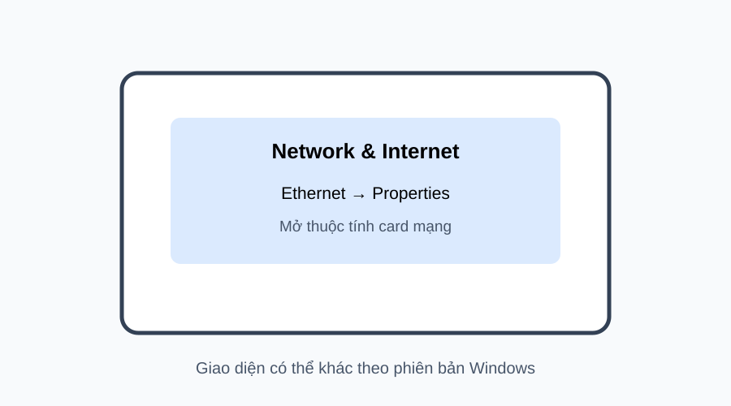

📷 Gợi ý ảnh thật: chụp màn hình Windows hoặc ảnh thao tác tương ứng, làm rõ đúng vị trí cần bấm/nhập.
1
BƯỚC 1 — Mở phần cấu hình card mạng
Em làm: Mở phần Network/Internet của Windows, chọn đúng card mạng đang sử dụng và mở Properties.
✓ Kết quả đúng: Đã mở đúng thuộc tính card mạng; không cấu hình nhầm card không sử dụng.
🔧 Nếu sai: Nếu có nhiều card: xác định đúng card đang nối vào mô hình trước khi thay đổi.